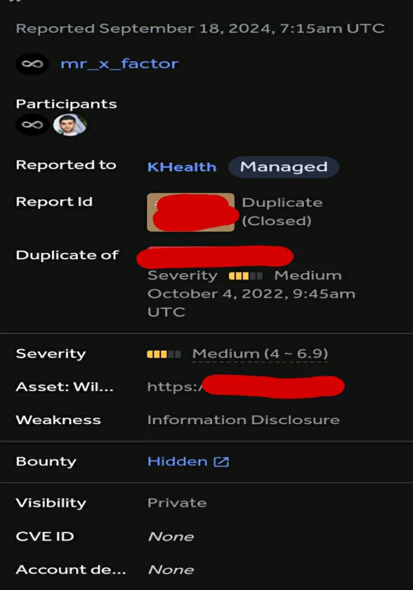
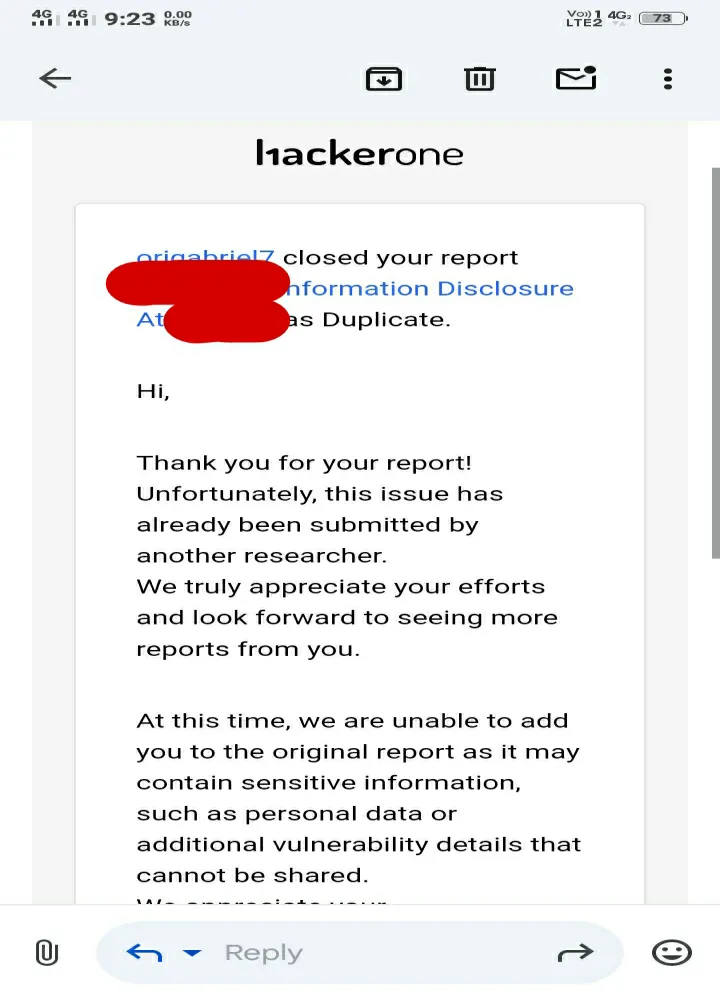
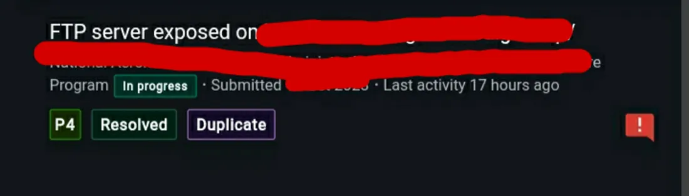
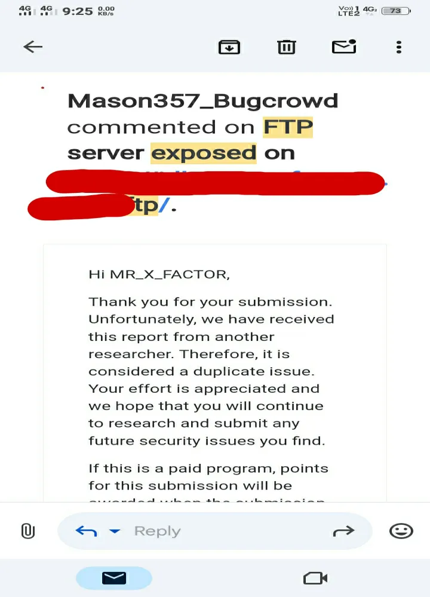

Hello Hackers! 👋
I hope you're all doing well.
Today, I'm excited to share my experience with you about finding bugs on HackerOne and Bugcrowd. So, let’s dive right into it!

HackerOne And Bugcrowd 🐞🛡️
These platforms are some of the most popular places where companies connect with ethical hackers. Companies get their bugs fixed with the help of hackers, and in return, hackers receive bounties, swag, points, etc. 💰🎁
At this point, HackerOne and Bugcrowd are filled with both new and experienced researchers. So, whenever a new program is launched, everyone jumps in to start hunting. It’s like a race 🏁—the first one to report gets the bounty! 💸
However, sometimes HackerOne and Bugcrowd use automated responses 🤖, and they don’t always review reports properly. I've personally experienced this several times. Even though my bug was valid or sometimes even critical, it often got marked as "Informative" or closed because I didn’t have enough reputation points or signal. Meanwhile, others with more reputation had their reports accepted. 😞
I believe that if they reviewed the reports carefully, more researchers would receive the credit they deserve. I even posted about this issue on LinkedIn recently! You can check out the full story there: LinkedIn Post
And I also posted one Medium article about my Critical finding at HackerOne but was surprised by the company's response. You can check out the full story here: Article 🔗
Finding Bugs 🐞
I recently found a bug on HackerOne in a health-related website. Unfortunately, I can’t disclose the
name, but here’s a tip: try adding wp-json/wp/v2/ to your wordlist. It revealed a large
amount of JSON data, including accessible paths like /wp-json/wp/v2/users,
/wp-json/wp/v2/comments, /wp-json/wp/v2/posts,
/wp-json/wp/v2/doctors, /wp-json/wp/v2/patients, and sometimes even
/wp-json/wp/v2/admins. 😯

I reported the bug, expecting another "Informative" closure. But this time, the triage team reviewed the report manually (no automated response!), validated it, and confirmed it as a valid bug. Unfortunately, it turned out to be a duplicate. 💔 But, on the bright side, at least it was marked as a medium severity issue, not just Informative, so I’m happy with that!

Moving to Bugcrowd
Now, moving on to Bugcrowd. This was a simple P4 bug—a website was leaking FTP access at
https://*.target.com/ftp. I reported it, and it was accepted, but guess what? Another
duplicate! 😅
Here’s another tip: try /ftp on your target; sometimes you’ll find unprotected FTP
servers leaking data without any passwords. 🔓

These bugs were fixed and resolved a while ago, but sadly, both were duplicates. Still, that’s the life of a hacker or bug bounty hunter! 😄 It happens to everyone at some point. No pain, just aiming for the next bug! 🎯

Final Thoughts 💭
The purpose of sharing this story is to motivate you all to keep hunting, whether on HackerOne, Bugcrowd, or any private program or VDP. I hope you’ve learned something from my experience. Be the first to report, but most importantly, keep reporting and stay positive. 🙌 Whether you get "Informative," "Duplicate," or "Accepted," you’ve done your job. Don’t get discouraged—it’s not always your fault. Just do your work and leave the rest to fate. ✨
That’s it for today. Thank you for reading, and I hope this helps any newbie or experienced hacker out there. ❤️
MR. X FACTOR
Handles:
- Linktree: https://linktr.ee/mrxfact0r_99